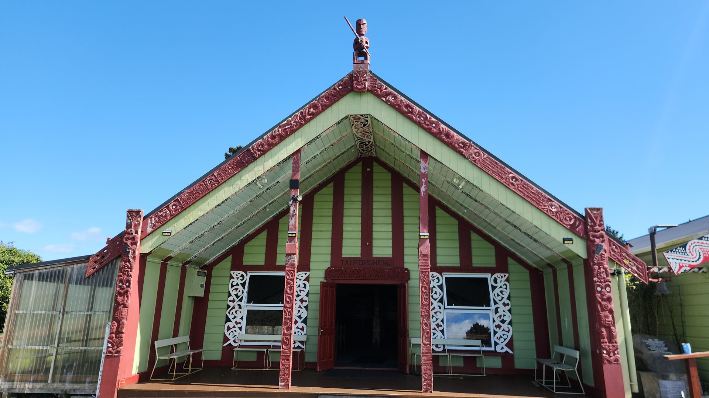
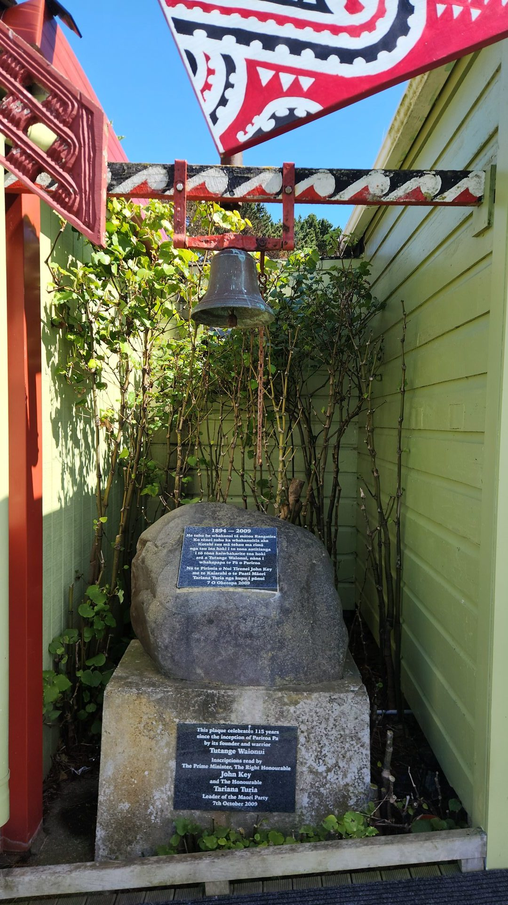
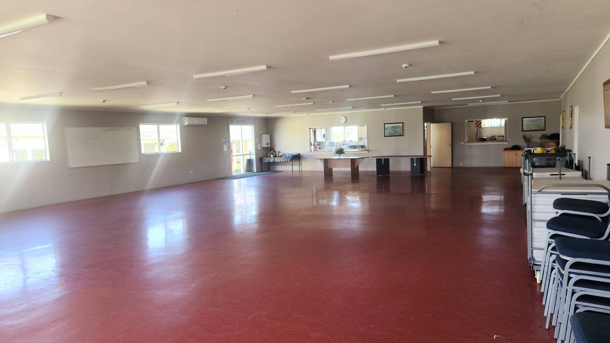
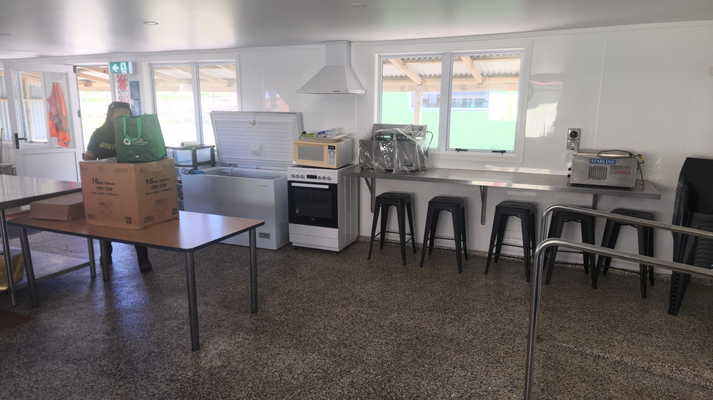

The Rules
Two things to know
Tangihanga comes first
Any confirmed booking steps aside for a tangihanga — the wishes of the whānau pani are paramount. That's the way of the marae, and we'll work with you to re-arrange.
Trustees confirm every booking
Your enquiry isn't confirmed until the trustees have confirmed it with you. Nothing is locked in by the form alone.
Facilities
What we offer
Five buildings, one pā — each with its own name and story.

Taiporohēnui
Our wharenui. The gathering space and heart of the pā: tangihanga, hui and wānanga, with mattresses provided for overnight sleeping.

Putoetoe
Our wharekai, "servant to the people," where kai is served and shared.

Te Mataura
Our dining room, with kitchen facilities for serving kai.
Te Kapenga
The church, shifted across the river from Hukatere in three sections.
Kaikaapo Kōhanga Reo
Nurturing the pā's mokopuna since 1994. It operates on the grounds and is not part of hireage.
The venue in use



For a tangihanga, please don't wait for the form — phone 06 273 8807 or 027 536 3629, at any hour.
How It Works
Booking process
1 · Talk to us
Phone 06 273 8807 or send the enquiry form below — a trustee will talk it through with you. Read our kawa and tikanga.
2 · Send the details
The form below asks for everything we need in one go — kaupapa, dates, numbers.
3 · We check the calendar
And talk through your kaupapa with you.
4 · The trustees confirm
Your booking is confirmed in writing.